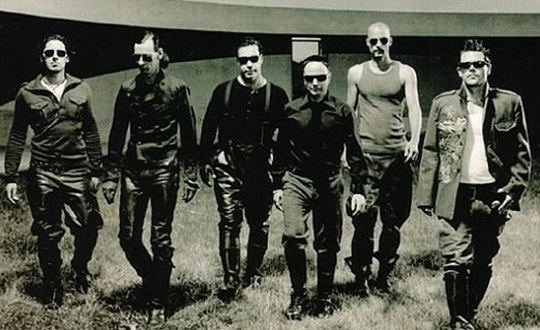

乐队资料：Rammstein是一支德国的重金属乐队，1994年组建，由东德地区一群厌倦了工厂生活的无产阶级组成。它们的音乐混杂了工业和电子成分。他们的名字来源于Ramstein空军基地（加了个“m”）,也就是Ramstein空难的发生地。1988年8月28日，在一次美国空军的飞行表演中飞机相撞造成80人死伤。乐队起这样的名字旨在让人们不要忘记发生在空军基地的悲剧。从字面上看，“ram stein”其实是“石头大槌”的意思。） 说到Rammstein，立即想到让我开始热爱他们的那场震撼的柏林现场。从整个的演唱会的设计，服装，舞台，动作，造型，我觉得是对“工业金属”的一个很好的诠释，让我们这些接触这类音乐少的人很形象地认识到了比较抽象的一个名词。特别是演唱会里鼓的声效的处理，那个浑厚又不刺耳的鼓的效果处理实在是喜欢得不行了。
记得以前好像看过一篇文章，似乎是一个老师写的，说她想不通那些听摇滚的青年小伙怎么就那么爱甩头，似乎是为了装COOL而刻意行为另类。我以前也不是很想得通，直到我看了Rammstein的柏林现场，看到那群德国歌迷在那一个节奏地整齐地甩头。我不爱动的身体都有点蠢蠢欲动。这当然归功Rammstein音乐的力量。其实欣赏Rammstein的音乐有时候比许多音乐都要来得简单，这又刚刚说明了简单并不一定平凡。Rammstein其实把配乐都做到极简，我觉得可以把他们的音乐想象成一部类似于坦克那样的战车，以中速很稳很有力量的前进。他的鼓点就象一个大锤，一下一下地撞击着地面（人们甩头的节奏与力量来源于此），加上采样的失真吉他连复段，还有沉稳有力的贝司，主唱明显的德国佬，不管音乐多激也一直是低沉的嗓音。如果说这一切元素都显得闷的话，而作为调剂这一切的就是键盘手，键盘是乐队里最瘦小的一个人，没有其他人那么彪悍，他负责的键盘也正显示了灵气，犹如追随在战车周围一起前行的精灵。 由于战车的音乐号召力和战斗性太强，伴随着的猜疑和评判肯定少不了。主要都是对于德国战车的政治性猜测，由于国籍的关系，还有几乎遍布全部音乐里的队列行进节奏，有人把他们与NAZI，右翼联系起来。在我不懂歌词的时候也曾这样认为，但后来看了许多歌词的翻译，发现基本都是讲“性”“暴力”“迷信”等，唯一和政治沾边的只有一首歌是反美的。在这方面豆瓣有一位朋友已经做了详细说明：（http://www.douban.com/group/topic/1713155/ 有兴趣的可以看看）
其实就自己而言，是相对不爱说话的人，喜欢的音乐里伤感的也占了大多数，不大喜欢特别吵，特别闹的音乐。战车是为数很少让我很接受的一支乐队，当然也是因为他们的音乐虽然重，但是一点都不闹。最初接触战车的音乐时，我们是在大学的模型室里通宵的做模型，旁边一哥们在大声的放着CD，大家干得非常有劲；到后来毕业了，我最享受的事也是一个人抱着一壶暖水，在冬天的夜晚，一边听着战车一边打实况足球，狂虐电脑得时候。中国足球队每逢大战都要开动员会，进行思想教育，鼓舞士气。我一直觉得应该让这群人在比赛前听听战车。能不能赢不敢说，但估计起码能热血沸腾，斗志顽强一点。当然这是不可能的了。